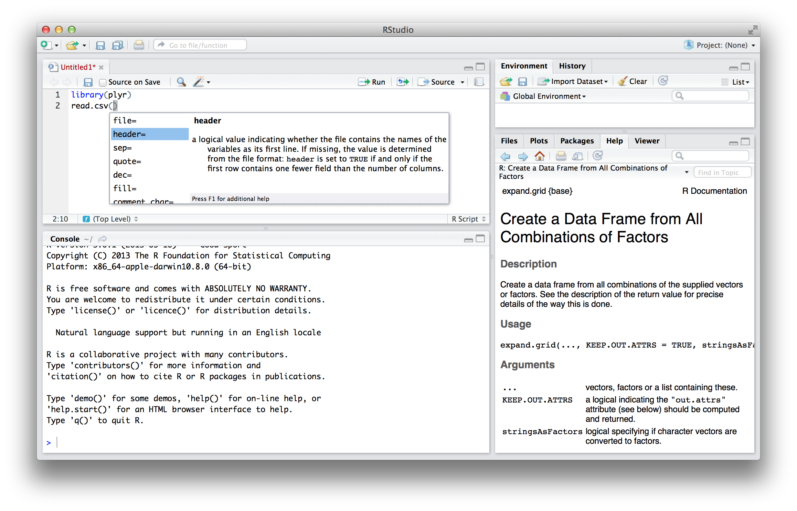
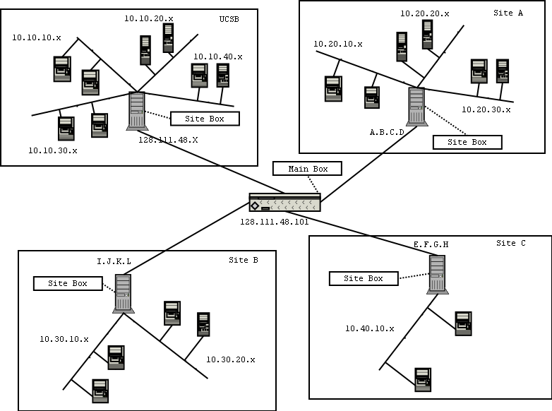
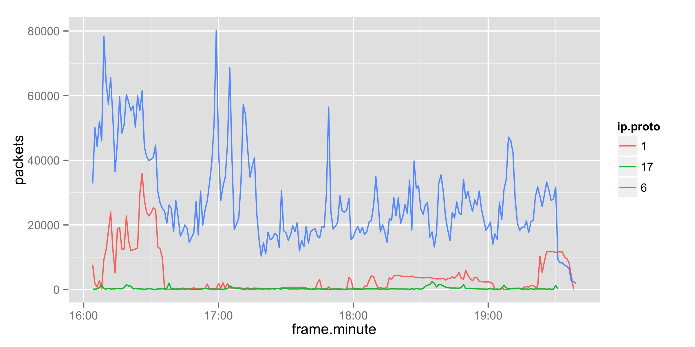
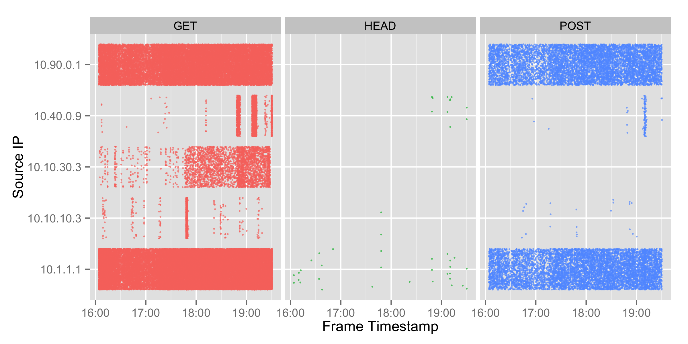

R
Intro to Data Analysis and Visualization
Greg Heartsfield, 2014
Agenda, Goals & AntiGoals
- Learn enough R to be productive
- Learn how to learn R
- Understand R's strengths & weaknesses
- Demonstrate real-world usage
- Mostly loading and munging data
- A little bit of analysis/visualization
- Not convince you R is easy
- Not teach statistics
- Not show everything that R can do
Some broad overview of R is needed first, but the goal is to spend as much time as possible in front of an R session, working through two case studies.
What is R
What is R
- Free software environment for statistical computing, 20 years of development.
- Strongly influenced by the S language, created in 1976.
- Focused on statistics and visualization.
- Runs on all modern platforms.
- Competes strongly with high-end commercial packages like SPSS and SAS.
- Taught in universities, used in mission-critical applications
Why R (instead of Excel)?
- Volume - Millions or billions of rows
- Automation - Script analysis and graphics creation
- Complexity - Flexible data cleanup, sophisticated algorithms for analysis
- Accuracy - "Spreadsheets, even after careful development, contain errors in 1% or more of all formula cells"
- Auditability - Data + Script is 100% repeatable and transparent
- Visualization - Exploratory to publication quality graphics
Why Excel?
- Manual data entry
- One-off simple calculations
- You really need that 3-D pie chart
Installing R
Download RStudio IDE (optional, requires R)
Install packages that we'll be using
install.packages(c("plyr", "ggplot2", "lubridate"))plyrgives us powerful data manipulation toolsggplot2makes beautiful visualizationslubridatemakes working with dates and time simple
The R(Studio) Environment
Being Productive
- Organize data, scripts, and plots in the same directory
- Session » Set Working Directory » To Source File Location
- Pick a way of working:
- explore with console, saving the good bits into a script
- everything in console, run savehistory() and keep the good bits at the end
Experimenting with the Console
R can add
> 1.9+1
[1] 2.9R can add vectors...
> c(1,10) + c(2,20)
[1] 3 30store and recall variables,
> odds <- seq(from=1, to=30, by=2)
> odds
[1] 1 3 5 7 9 11 13 15 17 19 21 23 25 27 29and summarize them.
> summary(x)
Min. 1st Qu. Median Mean 3rd Qu. Max.
1 8 15 15 22 29Variables can be listed and deleted
> ls()
[1] "odds"
> rm(odds)Misc. other commands
> history() # list all commands entered
> ?name # show online help for package or function "name"
> ??name # search online help for anything containing "name"
> help.start() # browse a local copy of the R reference docsLoading Data
R has dozens of ways to import your data. Text, databases, binary files, Excel, network services, etc.
read.csv()is what you need 99% of the time for small comma-delimited text (~500MB)read.table()has better defaults for space-delimited text.read.csv.sql()reads data into SQLite, then uses an SQL select query to bring a portion into R. (fast)fread()in thedata.tablepackage for multi-GB files. (fastest)
Loading CSV (simple)
first,last
max,theiler
john,enders> read.csv("names.csv") first last
1 max theiler
2 john endersLoading CSV, pt2
Some uncommented junk in the header
max $ theiler $ 1899$US$"Delimiter $ in quotes"
# just a comment followed by a blank line
john $ enders $ 1897$ZA$> read.csv("names2.csv",
header=FALSE, sep="$",
skip=1, strip.white=TRUE,
comment.char="#",
col.names=c("first","last","birth.year",
"birth.country","comment")) first last birth.year birth.country comment
1 max theiler 1899 US Delimiter $ in quotes
2 john enders 1897 ZALoading CSV, pt3
Override default types
userid,name,age,phone
100,max,45,555-0000
101,john,22,555-2222> x <- read.csv("names3.csv",
colClasses=c("character", "factor", "numeric", "character"))Check the structure
> str(x)
'data.frame': 2 obs. of 4 variables:
$ userid: chr "100" "101"
$ name : Factor w/ 2 levels "john","max": 2 1
$ age : num 45 22
$ phone : chr "555-0000" "555-2222"Data Types
Atomic Types
| Type | Representation | Examples |
|---|---|---|
| integer | 32-bit long (warns on overflow) | 1382504927 |
| numeric | 64-bit double, floating point | 4.527471e+30 |
| character | UTF-8 supported, auto-caching | "this is a string" |
| logical | 32-bit | TRUE and FALSE |
Data Objects
- vector: sequence of values of the same type
c(1,2,3,4)- list: collection of values of different types
list("one", "two", 3, 4.0)- factor: mapping from names to numbers
factor("TX", "CA", "NY")- data.frame: similar to a relational database table
data.frame(state=c("TX", "CA"), pop.mil=c(25, 39))
Case Study 1 (Using Data Frames)
The UCSB International Capture The Flag (also known as the iCTF) is a distributed, wide-area security exercise, whose goal is to test the security skills of the participants.
The 2002 contest includes system logs from machines under attack, we'll use the HTTP logs here to investigate loading and analyzing real-world data, primarily to understand how to work with dataframes.
First Look
If you suspect delimited data, start with read.csv and peek at the first few rows.
s <-read.csv("treasurehunt_alpha_httpd_access.log",nrows=5)Use View(s) to see the raw data. Datatypes are shown with str(s).
Issues noted: no header, space delimited, "-" for blanks, missing fields...
Reading Full Dataset
s <-read.table("treasurehunt_alpha_httpd_access.log",
fill=TRUE, # missing fields set as blank
na.strings = "-", # "-" set to NA
stringsAsFactors = FALSE) # do not use factorsGet a better look at identified columns, and assign names
colnames(s) <- c("client", "identd", "userid",
"date.1", "date.2", "request",
"status", "size",
"referrer", "useragent")Discarding Data
If we have data we know will not be used, go ahead and discard it early on.
> summary(s$identd)
Mode NA's
logical 2522Set a check so that the script will error out if we ever encounter values here. Then, we can confidently delete it.
stopifnot(is.na(s$identd))s$identd <- NULLParsing Dates
# Combine date components
s$req.date <- apply(s[,c("date.1","date.2")], 1, paste, collapse=" ")
# Parse these as real dates:
s$req.date <- as.POSIXct(strptime(s$req.date, "[%d/%b/%Y:%T %z]"))
# Delete the old date columns
s[,c("date.1","date.2")] <- list(NULL)Categorical Variables
HTTP status looks like a number, but we should not treat it like one. Why? Because taking the average makes no sense. Reassign it as a categorical variable (a factor).
s$status <- factor(s$status)Rewriting Variables
When no data was sent, this was recorded as a blank or NA value. We know this really means "0 bytes sent", so we can rewrite the column.
with() lets us refer to a dataframes variables with the df$var syntax.
ifelse() runs a test on a vector, and replaces values based on whether the test was true.
s$size <- with(s,
ifelse(is.na(size),
yes=0,
no=size))Merging Datasets (prep)
Often you will need to incorporate multiple datasets together for an analysis.
Lets read in another dataset, giving us GeoIP data for the IP's in the web logs.
geoip <- read.csv("treasure_hunt_geoip.csv",
na.strings="", stringsAsFactors=FALSE)> str(geoip)
'data.frame': 40 obs. of 8 variables:
$ IP : chr "128.111.48.107" ...
$ host : chr "fleming.cs.ucsb.edu" ...
$ country.code: chr "US" ...
$ city : chr "Santa Barbara" ...
$ postal.code : int 93106 10469 ...
$ longitude : num -120 ...
$ latitude : num 34.4 ...
$ match : chr "fleming.cs.ucsb.edu" ...Merging Datasets (prep)
One problem... our original dataset resolved some, but not all client addresses
geoip <- rbind(geoip,geoip) # duplicate all rows
geoip$match <- geoip$IP # make a new "match" var from IP
half <- 1:nrow(geoip)/2 # a sequence of half our rows
# overwrite the IP with Host for half the rows
geoip[half,"match"] <- geoip[half,"host"]Merging Datasets
We're finally ready to merge. We'll use the equivalent of a left outer join.
s.loc <- merge(s, # left "table"
geoip, # right "table"
by.x="client", # match this var
by.y="match", # against this
all.x=TRUE) # don't drop rows from sNow, s.loc contains all the requests, along with location data.
> s.loc[50,c("client", "status", "city")]
client status city
50 128.111.43.25 304 Santa BarbaraTabulating
Our first simple analysis... lets put our GeoIP data to work and understand how cities and HTTP status codes relate:
> table(s.loc$status, s.loc$city, useNA="ifany")
Bronx King Of Prussia Santa Barbara <NA>
200 1 1 742 7
301 0 0 2 0
304 0 0 37 6
400 0 0 33 1
403 0 0 11 0
404 0 0 1668 0
405 0 0 2 0
408 0 0 2 0
501 0 0 9 0Case Study 1A S-A-C
Now we have clean web logs, joined with some potentially useful location data. We'll use a common technique for cleaning & analysing data called "split-apply-combine" to do further analysis.
- Split: create groups based on some common attribute.
- Apply: transform each group using a function (such as sum or average).
- Combine: bring the transformed groups back together in one structure.
Split-Apply-Combine Illust.

Simple Example
ddply(s.loc, # dataset
.(status), # Split on HTTP status
summarize, # Function to Apply
max.response = max(size)) # Arguments status max.response
1 200 44192
2 301 293
3 304 0
4 400 514
5 403 298
6 404 386
7 405 310
8 408 0
9 501 332Another Example
ddply(s.loc, .(country.code, status), summarize,
size.total=sum(size, na.rm=TRUE),
size.mean=mean(size, na.rm=TRUE),
request.count=length(size)) country.code status size.total size.mean request.count
1 TW 400 318 318.0000 1
2 US 200 1151179 1547.2836 744
3 US 301 585 292.5000 2
4 US 304 0 0.0000 37
5 US 400 11587 351.1212 33
6 US 403 2844 258.5455 11
7 US 404 474735 284.6133 1668
8 US 405 618 309.0000 2
9 US 408 0 0.0000 2
10 US 501 978 108.6667 9
11 <NA> 200 30082 4297.4286 7
12 <NA> 304 0 0.0000 6Case Study 2 (PCAP)
The 2nd dataset, also from UCSB iCTF, is 2.3GB of network captures (PCAP) taken during a capture-the-flag contest.
Parsing PCAP
R has no special tools for parsing PCAP, wireshark and snort are better tools for parsing network packets. Here we extracted some basic IP, TCP, and HTTP attributes from the captures, resulting in about 6.9 million rows of tab-separated data.
tshark -r ictf.pcap -T fields -e frame.time -e ip.src
-e ip.dst -e ip.proto -e tcp.srcport
-e tcp.dstport -e http.request.method
-e http.request.uri -e http.host
-e http.authorization -e http.connection
-e http.cookie -e http.response.code
-e http.user_agent -E header=y
-E separator=/t -E quote=n
-E occurrence=f > ictf2003.tsvLoading in R
Data is easily readable in R, with some important additional flags to read.table(), and timestamp parsing.
i <- read.table("ictf2003.tsv",
sep="\t",
header=TRUE,
na.strings="",
fill=TRUE,
nrows=1000000, # improve speed for testing
comment="", # appears in strings
colClasses=c("character",
rep("factor", 6),
"character",
rep("factor", 6)))
i$frame.time <- strptime(i$frame.time, "%b %e, %Y %H:%M:%OS")Line Charts
The obvious first thing to look at is traffic by protocol. Let us summarize packets/minute for each protocol on a plot.
Prep the data by creating a new variable for the timestamp, at 1-minute resolution:
i$frame.minute <- round_date(i$frame.time, "minute")Group by the minute and protocol, and find how many packets exist for each grouping:
i.ppm <- ddply(i, .(frame.minute, ip.proto),
summarise, packets=length(ip.proto))Line plot using our new variables, color by protocol:
qplot(data=i.ppm, y=packets, x=frame.minute, geom="line", colour=ip.proto)Line Charts
Trellis/Faceted Plots
Facets, or "trellis" plots, are very useful with complex datasets that would otherwise have too much overlapping data to be legible. Adding "jitter" to the data can also help when overlap would obscure data.
Trellis Contd
That's a really complicated plot to make, right? It's not too bad...
A bit of munging needed to find the top-5 source IPs:
src.ip.counts <- as.data.frame(table(i.http.method$ip.src))
top5.ips <- head(src.ip.counts[order(-src.ip.counts$Freq),1],n=5)
i.top5 <- i.http.method[i.http.method$ip.src %in% top5.ips,]The plot itself is very simple:
qplot(frame.time, # X-axis, time
ip.src, # Y-axis, source IP
data=i.top5, # Dataset
colour=http.request.method, # What to color
geom="jitter" # How to draw data, "jittered points"
facets=~http.request.method) # What to repeat in each facet